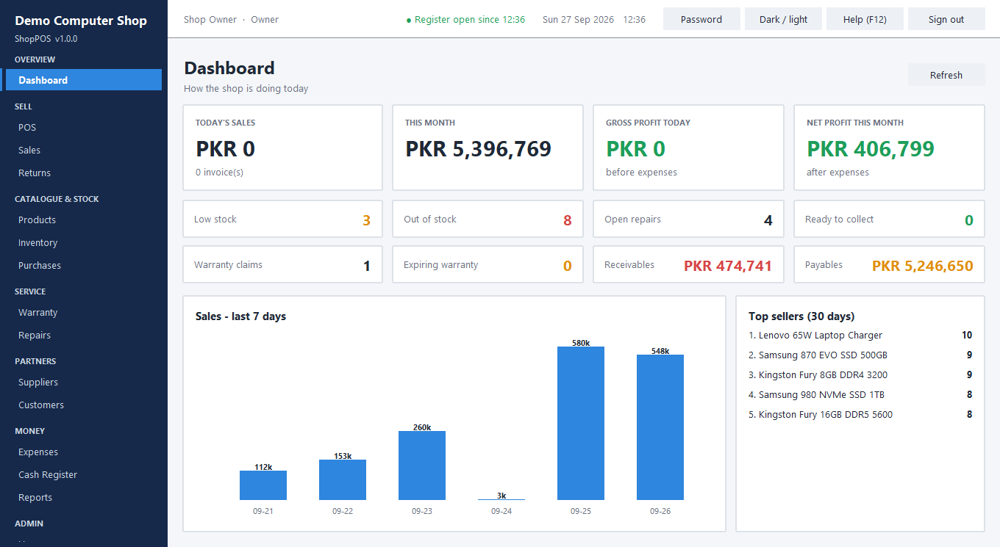
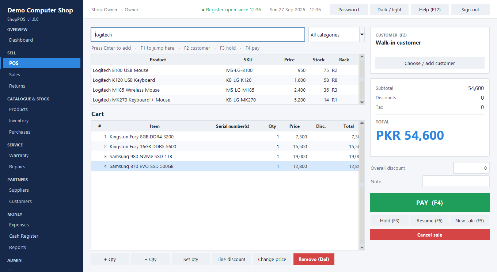
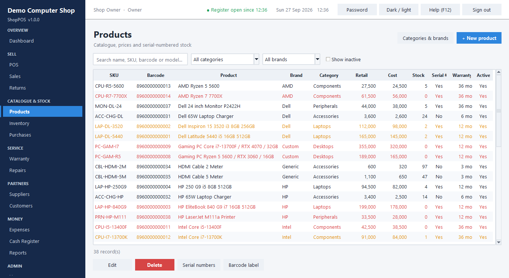
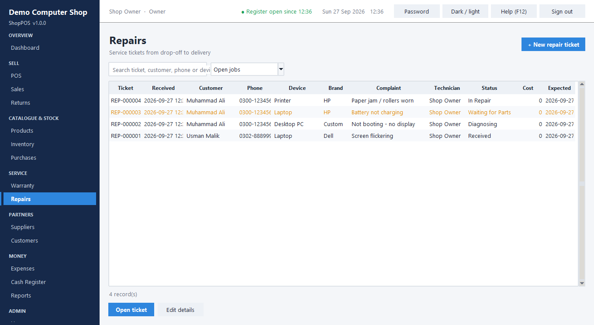

A native Windows desktop point-of-sale system I built end-to-end for a computer/electronics retail shop: POS checkout with barcode + serial-number scanning, purchasing, supplier & customer credit, returns, warranty tracking, a full repair-ticket workflow, cash register reconciliation, 26 reports, role-based permissions, an audit log, and automatic backup/restore — packaged as a single self-contained Windows installer. No internet connection, database server, or runtime install required on the shop PC.
Windows will show a SmartScreen warning because the installer isn't code-signed — click "More info →
Run anyway". First sign-in: admin / admin123 (you'll be asked to change it, and offered
demo data to explore).




Barcode/serial scan checkout, hold & resume sales, split payments (cash/card/bank/wallet/credit/store credit), and per-unit serial numbers for laptops, GPUs, CPUs and printers — from purchase to sale to warranty.
Purchase orders → partial receiving with serials → weighted-average costing → supplier payables → payment, plus stock adjustments that always leave an audit trail.
Warranty is created automatically at sale and tracked to expiry. A full repair-ticket workflow covers status, parts consumed (deducted from stock), labor, technician notes, and delivery with payment.
Cash register open/close with expected-vs-actual variance, expense tracking, customer/supplier ledgers, and a real profit & loss report using actual cost of goods sold — not just revenue.
Sales, inventory, purchasing, financial and repair reports, each exportable to PDF, Excel and CSV — generated with zero third-party libraries.
8 roles, 30 fine-grained permissions, PBKDF2 password hashing with lockout, session timeout, and an audit log recording every sensitive change with old/new values.
Every checkout is one atomic database transaction — sale, line items, payments, stock movement, serial numbers, warranty record, customer/supplier ledger, and cash register entry commit together or none of them do. The whole app (UI included) is built on the Python standard library only: Tkinter for the desktop window, SQLite for storage, and a from-scratch PDF/XLSX writer for report export — no GUI framework, ORM, or reporting library, which kept the packaged installer to ~26 MB with nothing to install on the shop PC.
# services/sales.py — every checkout is one all-or-nothing transaction def complete_sale(db, user, cart): with db.tx(): # commits together or rolls back together lines = _lines_from_cart(db, cart["items"]) totals = _calc(lines, cart["overall_discount"]) for line in lines: # stock, serials, warranty, cost — validated together if line.product.stock < line.qty: raise POSError(f"Insufficient stock for {line.product.name}.") sale_id = db.insert("INSERT INTO sales ...", ...) for line in lines: inventory.move(db, line.product_id, "Sale", -line.qty, ...) if line.product.serialized: warranty.create_from_sale(db, sale_id, line) cash.post(db, sale_id, totals.paid_in_cash) return sale_id # any exception above -> nothing was written
| Suite | Result |
|---|---|
| Service-level unit tests | 80 passing |
| UI workflow test (real Tk window, POS end-to-end) | 21 checks passing |
| Full UI test — every module driven through real screen code | 73 checks passing |
| Load test — 10k products / 100k sales / 520k stock transactions | POS scan 0.3ms · heaviest report 0.74s |
| Packaged installer — install → run → uninstall lifecycle | verified in a sandboxed environment |